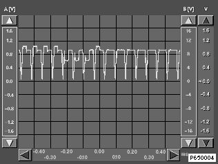
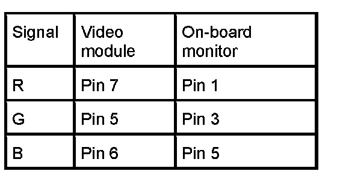
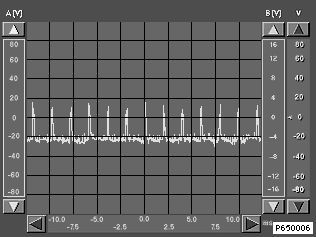
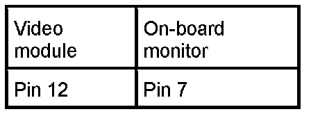

RGB Signals (Without VID Video Module)
RGB Signals
All oscilloscope images are reference values and may deviate depending on the image content!

Image signals R G B (red, green, blue)


Ground LC display < Evaluate voltage range only ! >
